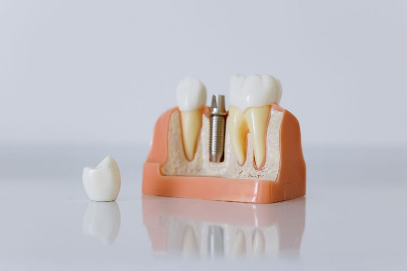
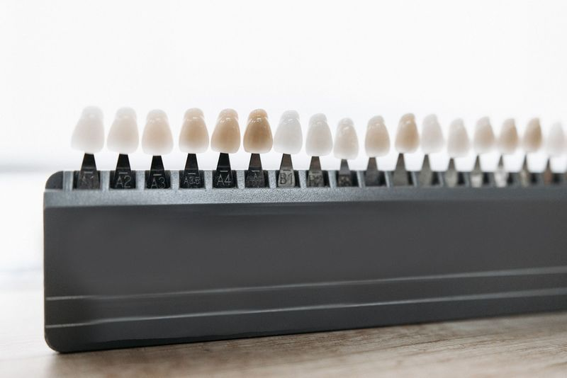

Dental Implants
Titanium implants that replace missing teeth with stable, natural-looking restorations.
Dental Implants for Nyeland AcresJaw care for Nyeland Acres
An aching jaw, a stiff jaw or a painful click are all reasons Nyeland Acres patients book a visit at the single office we have, on E. Gonzales Road in Oxnard. Expect an exam of how your jaw moves, and conservative, non-surgical care is tried first.
Joint versus disorder
People often say TMJ when they mean a jaw problem, but the letters name the joint. There is one on each side, and both link the lower jaw to the skull. TMD, short for temporomandibular disorder, covers over 30 conditions, each bringing pain or trouble to those joints or to the muscles that work the jaw.
Some TMDs start in the joint, some in the chewing muscles, and some show up as headaches caused by the disorder. Plenty clear up without treatment, though a few last for the long term.
Signs worth mentioning include soreness in the face or jaw, a stiff or locking jaw, and clicking, popping or grinding noises. A painless click is common and counted as normal, and it needs no treatment. Cleveland Clinic describes a jaw exam in which you move your mouth and jaw in different directions while the provider listens for cracking and popping sounds (opens in a new tab).
Nyeland Acres is a Ventura County community north of the city, outside the Oxnard city limits. A visit means coming into Oxnard, to the office at 1690 E. Gonzales Road, the only one we have.
Step by step
Diagnosis begins with a comprehensive dental and medical history, followed by a thorough clinical examination.
Before your appointment for TMJ treatment, it’s helpful to note your symptoms, including when they started, what worsens or alleviates them, and how they affect daily activities.
Your dentist at our Oxnard office will assess jaw movement, tenderness, and joint sounds. Panoramic X-rays, CT scans, or MRI can reveal joint abnormalities, bone degeneration, or soft tissue damage.
We take time to explain your condition and symptoms, answer your questions, and involve you in every decision about your care and pain relief.
Our treatment approach prioritizes conservative, non-surgical therapies, including bite splints, custom night guards, physical therapy, and medication for inflammation and muscle relaxation.
We collaborate with other dental and medical professionals to ensure holistic solutions for long-term TMJ health and headache relief.

Why patients choose TMJ care
Oral health and everyday life can both get better once TMJ symptoms are treated the right way, and Nyeland Acres patients are welcome to ask how.
What we offer
From jaw care to checkups and crowns, the services below are offered at one office on E. Gonzales Road, open to Nyeland Acres patients.

Titanium implants that replace missing teeth with stable, natural-looking restorations.
Dental Implants for Nyeland Acres
Porcelain veneers, dental bonding, teeth whitening and smile makeovers.
Cosmetic Dentistry for Nyeland Acres
Clear aligners that straighten teeth gradually, without metal brackets.
Invisalign for Nyeland Acres
Exams, dental crowns and root canals for patients from youngsters to seniors.
General Dentistry for Nyeland Acres
Prompt, compassionate emergency dental care to address your pain.
Emergency Dentistry for Nyeland Acres
Treatment that saves a damaged tooth by cleaning out the pulp.
Root Canal for Nyeland Acres
A tooth-shaped cap that restores the shape, size, strength and appearance of a damaged tooth.
Dental Crowns for Nyeland Acres
Scaling and root planing, gum grafting and other treatment for gum disease.
Gum Care for Nyeland Acres
Care for wisdom teeth that lack space or come in incorrectly.
Wisdom Teeth for Nyeland Acres
Whitening treatments, including custom at-home whitening kits.
Teeth Whitening for Nyeland AcresOur approach
We prioritize clear communication, individualized treatment plans, and empathetic support, whether you’re experiencing jaw pain, headaches, or bite issues
Signs to watch for
Common symptoms of TMD and orofacial pain include persistent jaw pain, locking of the jaw, facial soreness, difficulty opening your mouth, and frequent headaches.
Orofacial pain includes discomfort in the mouth, face, or jaw, often caused by conditions such as temporomandibular joint (TMJ) disorders, neuropathic pain, headaches, and dental issues. Persistent jaw pain may signal an underlying dental or joint issue requiring a professional appointment.
Avoiding extreme jaw movements and trying gentle home remedies like moist heat can provide temporary pain relief while you wait for your consultation.
Treatment options
Custom TMJ night guards and splints from Omni Dental Specialty are precision-made oral appliances designed to relieve jaw pain, muscle tension, and teeth grinding associated with temporomandibular joint (TMJ) disorders.
Omni Dental Specialty offers a full range of jaw pain treatments, including custom night guards for bruxism, TMJ therapies, targeted bite adjustments, and medication for inflammation.
For Nyeland Acres patients, TMJ care can include a detailed evaluation, bite analysis, custom oral appliances, coordination with physical therapy and, when needed, minimally invasive procedures.
For patients with severe muscle-related pain, BOTOX® Therapeutic injections can be a highly effective treatment to relax the jaw muscles, reduce clenching, and alleviate headaches.
For severe cases of jaw pain or TMD, minimally invasive procedures such as joint injections or arthrocentesis may be recommended as a treatment. Surgical intervention is considered only when all other therapies have been exhausted.
Why patients choose us
One office on E. Gonzales Road for routine care, smile makeovers and tooth replacement, led by Dr. Kourosh Keihani, DDS.
Patients rate the practice Excellent, based on 614 Google reviews.
Book Online (opens in a new tab)The Oxnard office uses a CT scan, an intraoral camera, digital X-rays and an aerosol machine.
The CT scan is used for CT-guided implant placement.
Omni Dental Specialty accepts Denti-Cal, most PPO plans and HMOs.
Call before your visit to ask about your plan, or about financing.
The office is open for emergency dental appointments, for tooth pain and other urgent problems.
Call (805) 366-6000 to arrange a visit.
General, restorative and cosmetic dentistry for patients from youngsters to seniors.
From exams and crowns to implants, veneers and Invisalign, under one roof at 1690 E. Gonzales Road.
Patient reviews
Dr. Keihani is an excellent dentist, experienced and talented to give solutions to my varied dental needs. I’m very thankful His staff is also very friendly and helpful. A well-run clinic.
“Waiting time was 5mins, office staff friendly, doctor let you know what’s going on, and Alijah is happy! That’s what counts to me!!!”
“I had very a good experience at Omni Dental. The staff is very friendly and caring. I highly recommend this office for dental treatment.”
“Such a great attitude, attention, atmosphere, you can’t ask for more!”
“Crystal is very professional and curtious I highly recommend her as a hygenist office staff nice.”
“The doctor was excellent the owner of the company very knowledgeable very experienced very hospitable he really knows his dental work very affordable I would recommend him to every person go see this doctor doctor that Omni dental Office”
Questions
Call us today at (805) 366-6000 to schedule your consultation in Oxnard, CA.
Typical TMJ symptoms include chronic jaw pain or soreness, clicking or popping sounds when opening or closing your mouth, difficulty chewing, jaw stiffness, locking, headaches or migraines, ear pain or ringing, and facial discomfort or swelling.
Our team performs a comprehensive clinical exam, discusses your symptoms and history, and uses advanced imaging like 3D cone-beam CT scans to precisely assess your jaw joints and surrounding structures. This thorough process ensures an accurate diagnosis and guides effective TMJ treatment for lasting pain relief.
We prioritize conservative therapies such as custom-made oral splints or a nightguard to reduce joint strain and muscle tension, physical therapy coordination, medication to control inflammation, and lifestyle guidance, including jaw exercises and dietary recommendations. BOTOX® Therapeutic injections may also be an option for muscle-related pain, providing significant relief as part of your TMJ treatment for headaches and other symptoms.
Yes. TMJ dysfunction often contributes to chronic headaches and migraines, typically near the temples, due to muscle tension and joint strain. Addressing TMJ issues with treatment can significantly reduce headache frequency and intensity, providing meaningful pain relief from these symptoms.
Surgery is only recommended as a TMJ treatment when all conservative approaches have been exhausted and there is a clear structural issue requiring correction. At Omni Dental Specialty, we focus on non-invasive treatments first and carefully evaluate each case before suggesting surgical options for jaw pain relief.
TMJ treatment can fall under dental or medical insurance coverage, which varies by plan. Our administrative team is experienced in reviewing and maximizing benefits and accepts many major dental plans. We also offer financing options such as CareCredit to help manage treatment costs and make pain relief for your headaches and symptoms more accessible.
No. It is an unincorporated community of Ventura County, outside the city limits.
Phone the dental office at (805) 366-6000. If you believe you are experiencing a medical emergency, call 911 or go to the nearest emergency room. See Emergency Dentistry for more.
Visit us

Visit us
1690 E. Gonzales Road, Oxnard, CA 93036
Monday to Thursday, 9am to 5pm
Friday, 9am to 4pm